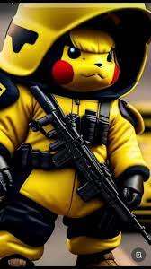
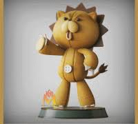

¡Hola! Mi nombre es Tsuna. Soy un entusiasta de la tecnología y me encanta aprender sobre programación y desarrollo web.
Tengo una familia maravillosa compuesta por 5 miembros.
Estudié en el colegio Mateo Pumacahua. Es un lugar increíble para aprender y hacer amigos.
Tengo un grupo de amigos increíbles con los que comparto muchas aventuras y momentos divertidos.
En mi tiempo libre, disfruto escuchando música electrónica. Esto incluye actividades como:
Actualmente, estoy estudiando en la Universidad San Agustín de Arequipa, donde estoy persiguiendo mi grado en Ingeniería de Sistemas. Estoy emocionado por lo que el futuro me depara.
Aquí te muestro algunas imágenes relacionadas con mis intereses:
 